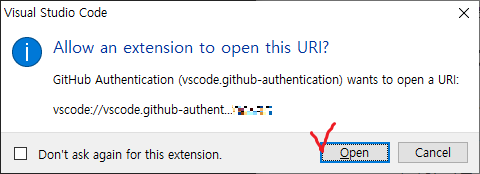

Visual Studio Code 소개, 설치, 기본 세팅
요즘 개발자 사이에서 인기있는 코딩 툴. Visual Studio Code에 대해 살펴보고, 설치 및 기본 세팅 방법까지 알아봅니다.

TL;DR
-
공식 홈페이지: https://code.visualstudio.com/
-
다운로드: https://code.visualstudio.com/download
-
Windows의 경우 chocolatey를 통해서도 설치 가능
choco install vscode -y
-
-
설치는 그냥 다음버튼만 눌러서 진행해도 괜찮음
-
[CTRL]+[SHIFT]+[X] 누르면 Extension 탭이 열림. 원하는 extension을 설치하여 이용.
- 모든 extension 보기(Marketplace): https://marketplace.visualstudio.com/vscode
Visual Studio Code 소개
Visual Studio Code는 마이크로소프트에서 개발하여 2016년에 출시한 고급 메모장IDE1입니다. 줄여서 VSCode 혹은 VSC라고도 부릅니다.
Getting started
Visual Studio Code는 가벼우면서도 강력한 소스 코드 편집기로, Windows, macOS, Linux에서 모두 사용 가능합니다. VSCode는 기본적으로 JavaScript, TypeScript, Node.js를 지원하며, 다양한 확장(extension)을 통해 다른 언어(C, C++, C#, Java, Python, PHP, Go 등)나 런타임(.NET, Unity 등)을 지원하도록 설정할 수 있습니다. 이 소개영상(영어)을 통해 VSCode로의 여행을 시작해보세요.
저는 이전에 Visual Studio, PyCharm, Eclipse, QtCreator, Vim+Plugin 등의 IDE를 사용해보았습니다만, 올 초 즈음부터 VSCode로 정착했습니다. 그 이유는 다음과 같습니다.
- 가볍다.
- 무료다.
- Windows와 Linux에서 모두 사용 가능하다.
- WSL과 같은 원격 환경에서의 개발을 지원한다.
- 내가 사용하는 여러 종류의 프로그래밍 언어를 하나의 IDE로 관리할 수 있다. (C++, Python, Go, Markdown, HTML, CSS, JavaScript)
- 설정해놓은 환경이 동기화되어, 여러 대의 컴퓨터를 사용해도 동일한 환경에서 작업할 수 있다.
뭔가 프로그래밍 고수가 된 것 같은 착각이 든다
VSCode 설치하기
다음 방법 중 편한 방법을 선택하여 진행하시면 됩니다.
- 공식 홈페이지에서 설치 프로그램을 다운받아 설치
- Chocolatey 프로그램을 통해 설치(Windows에서만 가능)
설치 프로그램 다운받아 설치
설치파일 다운로드
공식 홈페이지 첫화면에 있는 다운로드 버튼을 누르면 설치 프로그램이 다운로드 됩니다.

혹은, 다운로드 페이지를 이용하셔도 좋습니다.
설치파일 실행
User installer를 받으셨거나, 공식 홈페이지 첫화면에서 다운로드 받으신 경우에는, 설치 프로그램을 실행시키면 다음과 같은 경고가 뜰 수 있습니다.
이 설치파일은 관리자 권한으로 실행되지 않습니다. 시스템을 이용하는 모든 사용자가 VSCode를 쓰고자 한다면, System Installer를 다운받아 설치하세요. 그냥 진행해도 괜찮습니까?

일반적인 개인사용자 분들은 그냥 확인을 눌러 진행하시면 됩니다. 여러개의 Windows 계정이 존재하고 이 모든 계정에서 사용하게끔 하고 싶으신 분들의 경우에는, System Installer를 다운받아서 설치를 진행하시기 바랍니다.
그 이후에는 경로 설정 등의 내용이므로 특별한 이유가 없다면 그냥 다음버튼만 눌러주시면 됩니다.
Chocolatey를 통해 설치(Windows)
Chocolatey를 이용하신다면, 다음 명령어를 통해 간단하게 설치하실 수 있습니다.
choco install vscode -y

첫 화면 살펴보기

Extension 살펴보기
VSCode에는 정말 다양한 extension이 존재하며, 계속 개발되고 있습니다.
현재 제공하는 모든 extension은 marketplace 페이지에서 살펴볼 수 있습니다.
이 글에서는 우선 간단하게 언어 설정이나 테마 설정과 같은 기본적인 extension을 살펴보겠습니다.
Language pack extension
VSCode는 영어뿐만 아니라, 한국어를 비롯하여, 중국어, 일본어, 스페인어, 러시아어, 독일어,… 등 다양한 언어를 지원합니다. Microsoft에서 직접 제공하는 언어 팩이죠.
한국어 팩을 설치하시려면, korean을 검색하여 나오는 Korean Language Pack for Visual Studio Code를 설치하면 됩니다.

설치는 금방 끝납니다.
오른쪽 아래에 Restart Now 버튼이 나타나면, 눌러서 VSCode를 재시작하시기 바랍니다.

(개인적으로는 에러 검색 등의 용이성 때문에, 그냥 영어모드로 이용하고 있습니다)
Theme/icon extension
Marketplace에 보면 테마나 아이콘도 정말 다양하게 있습니다. 다음 그림과 같이 필터를 Themes 카테고리로 설정하시면, 테마/아이콘에 관련된 extension들을 살펴볼 수 있습니다.
테마/아이콘 변경은 왼쪽 아래의 설정아이콘을 통해 가능합니다.


Extension/설정 동기화하기
VSCode는 설치한 Extension목록, 설정값 등을 다른 컴퓨터에서도 동기화하여 동일하게 사용할 수 있도록, Sync 기능을 제공합니다.
동기화를 위해서는 Microsoft 계정, GitHub 계정 둘 중 하나가 필요합니다.
Sync 켜기
왼쪽 아래의 계정 아이콘을 클릭하여 Sync 기능을 활성화할 수 있습니다.

작성일(2020년 11월) 기준, 다음과 같은 경고가 뜨네요.
동기화 기능은 아직 준비단계입니다. 사용하기 전에 관련 문서를 읽어보세요.

아무도 안읽어보시겠죠 Turn On을 눌러 넘어갑니다.
그러면 창 위에 다음 그림과 같이 동기화할 항목을 선택하는 내용과 함께 Sign in & Turn On 버튼이 뜹니다.

Sign in & Turn On 버튼을 누르면, 계정 종류를 선택하는 항목이 뜹니다. 여기서 Microsoft로 로그인이나 GitHub으로 로그인 중 편하신 쪽으로 선택하시면 됩니다.

GitHub 계정으로 로그인하시는 경우에는, GitHub과 VSCode 연동을 승인하는 페이지가 뜹니다.
다음과 같은 경고창이 뜨면 Open을 눌러 진행하시면 됩니다.

Reference
https://code.visualstudio.com/
-
통합 개발 환경(Integrated Development Environment). 프로젝트 관리, 소스코드 편집, 컴파일, 디버그, 바이너리 배포 등, 개발에 필요한 여러 기능을 한데 묶어놓은 프로그램. ↩︎